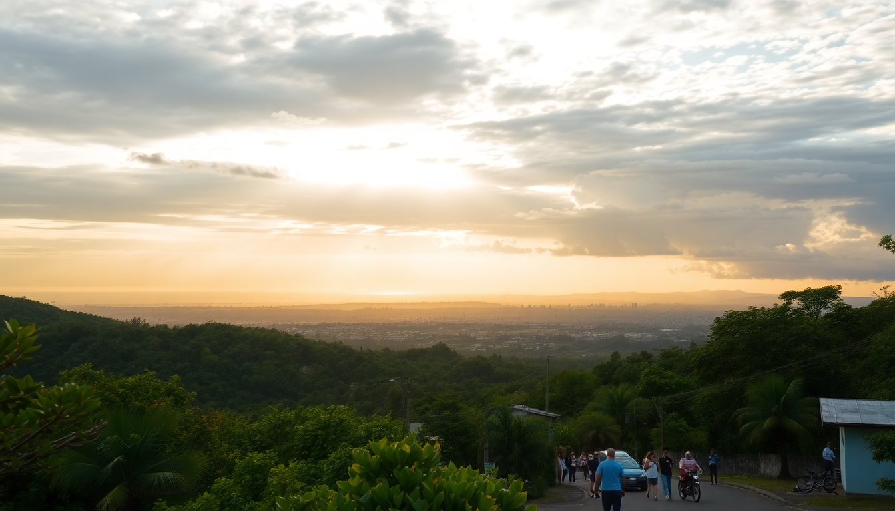

Getting Around Costa Rica: Buses, Rentals & Flights

I’ll be honest: getting around Costa Rica isn’t as simple as hopping on a subway. Roads wind through mountains, potholes are common, and distances that look short on a map can take four hours. But after two trips—one relying on public buses, one on a rental car—I’ve got a clear picture of what works for each route. This guide covers the three main options: buses, car rentals, and domestic flights, with specific advice for San José, Arenal, Monteverde, and Manuel Antonio.
Should I rent a car in Costa Rica or take the bus?
It depends on your patience and budget. Buses are cheap and reliable for major routes, but they’ll eat up your day with limited schedules. Renting a car gives you freedom to stop at roadside sodas (small local restaurants) and pull over for howler monkeys, but the roads can be rough and insurance costs add up fast.
I rented a 4x4 from Adobe Rent a Car at San José’s Juan Santamaría International Airport for a week. Total cost with full insurance (mandatory in Costa Rica) ran about $500. That included the SLI (Supplemental Liability Insurance) and a collision damage waiver. Without a 4x4, you’ll struggle on the gravel road into Monteverde and the steep drive to Manuel Antonio during rainy season.
Buses, on the other hand, cost around $8–$15 per leg. The Tracopa bus from San José to Manuel Antonio takes about 3.5 hours and drops you right at the park entrance. For Arenal, Transmonteverde runs a direct shuttle from San José to La Fortuna for $12. No stress, no insurance forms.
- Car rental tip: Book through Vamos Rent-a-Car or Adobe—they have transparent pricing and don’t hold your deposit hostage.
- Bus tip: For Monteverde, take the Transmonteverde bus from San José’s Coca-Cola bus terminal; it leaves at 6:30 AM and 2:30 PM daily.
- Road warning: The route from Arenal to Monteverde via Route 142 has 30 km of unpaved road. A sedan will bottom out. Use a 4x4 or take the Jeep-Boat-Jeep shuttle instead.
How do I get from San José to Arenal?
You have three solid options: bus, shuttle, or rental car. The bus is cheapest, but the shuttle is faster and more comfortable. I took the Gray Line shuttle from my hotel in Barrio Escalante to La Fortuna for $49 per person. It picked me up at 8 AM and I was at my hotel, Hotel Lomas del Volcán, by 11:30 AM—including a 20-minute rest stop at a soda near Ciudad Quesada.
Driving yourself takes about 3 hours via Route 1 and Route 126. The road is paved and well-marked, but traffic around San José can add 30–40 minutes in the morning. If you’re on a budget, the public bus from Terminal 7-10 in San José costs $8 and runs hourly until 6 PM.
- Shuttle companies: Interbus and Gray Line offer door-to-door service. Book online a day ahead.
- Where to stay in La Fortuna: Hotel Lomas del Volcán has volcano views from the hot springs. Arenal Observatory Lodge is closer to the volcano but requires a 4x4.
- Don’t miss: Stop at Soda La Hormiga for a casado with fresh fish—best meal on the route.
What’s the best way to travel between Arenal and Monteverde?
This is the trickiest leg in Costa Rica. The direct road is unpaved and slow, but the Jeep-Boat-Jeep combo is a clever workaround. It’s a shared shuttle that takes you from La Fortuna to the Lake Arenal dock, a 25-minute boat ride across the lake, then a van to Monteverde. Total time: 2.5 hours, cost $30–$40 per person.
I did this with Desafio Adventure Company and it was smooth. The boat ride offered great views of the volcano, and the van driver pointed out toucans near the Santa Elena Reserve. The alternative is driving yourself—I tried it in a 4x4 and it took nearly 4 hours, with constant potholes and a few nerve-wracking passes on the gravel section near Tilarán.
- Jeep-Boat-Jeep providers: Desafio and Transmonteverde both run this route. Book at your hotel desk.
- If you drive: Fill up gas in La Fortuna—there are no stations on the Monteverde side.
- Monteverde accommodation: Hotel Belmar has cloud-forest views and a great restaurant. Monteverde Lodge & Gardens is closer to the reserve.
Is it worth taking a domestic flight to Manuel Antonio?
Domestic flights save time but cost more. I flew from San José’s Tobias Bolaños Airport (not the international airport) to Quepos on Sansa Airlines for $85 one-way. The flight took 35 minutes, versus a 3.5-hour bus ride. The plane was a small 12-seater, and the landing at Quepos Airport is a bit bumpy—it’s a short strip surrounded by jungle. But you can be at the beach by 10 AM if you take the 7:30 AM flight.
Buses are the budget winner. The Tracopa bus from San José’s Terminal 7-10 costs $8 and runs every two hours. It drops you at the main entrance to Manuel Antonio National Park. From there, it’s a 10-minute walk to most hotels in Playa Espadilla area. Driving from San José takes about 2.5 hours via Route 27 and Route 34, but tolls and traffic near Jaco can slow you down.
- Flight booking: Book Sansa or Green Airways online at least a week ahead—flights sell out.
- Quepos Airport to Manuel Antonio: Taxis charge $15–$20. Walk to the main road and catch a shared colectivo for $1.
- Where to stay in Manuel Antonio: Hotel Si Como No has a pool overlooking the Pacific. Tulemar Bungalows is a splurge but worth it for privacy.
Can I use public buses to connect all four destinations?
Yes, but it takes planning. The bus network is decent for the main tourist corridor: San José → Arenal → Monteverde → Manuel Antonio → San José. I spent a week doing exactly this loop with public buses and spent under $60 total on transport.
The catch: schedules aren’t frequent, and you’ll lose a half-day on each transfer. For example, the bus from Monteverde to Manuel Antonio requires a change in San José—that’s a 6-hour trip with a 1-hour layover. I did it and it was fine, but I was tired by the time I arrived. Private shuttles or a rental car cut that to 4 hours.
- Bus from San José to Arenal: Terminal 7-10, buses to La Fortuna hourly from 6 AM to 6 PM.
- Bus from Arenal to Monteverde: No direct bus. Take the Jeep-Boat-Jeep or a shuttle.
- Bus from Monteverde to Manuel Antonio: Take the Transmonteverde bus to San José’s Coca-Cola terminal, then walk to Terminal 7-10 for the Tracopa bus.
- Bus from Manuel Antonio to San José: Tracopa runs 5:30 AM, 8 AM, 12 PM, and 4 PM.
What about driving conditions and safety on the roads?
Driving in Costa Rica is not for the faint of heart. Potholes are everywhere, even on major highways like Route 1. At night, roads are unlit and livestock sometimes wander onto the asphalt. I drove from Arenal to Monteverde after dark once—never again. Stick to daylight hours, especially on the gravel sections.
That said, rental cars are safe if you lock doors and keep valuables out of sight. I parked overnight at Hotel Belmar in Monteverde with no issues. In Manuel Antonio, I used the guarded lot near Playa Espadilla for $5 a day. GPS works well offline with Maps.me or Google Maps downloaded beforehand—cell signal drops in the mountains.
- Road hazards: Potholes, sudden fog in Monteverde, and unmarked speed bumps in towns.
- Gas stations: Grupo Delta stations are reliable. Pay in cash (colones) for a small discount.
- Police checkpoints: Common near Jaco and Puntarenas. Keep your passport and rental agreement handy.
FAQ
Is it better to rent a car or use shuttles in Costa Rica? For a group of three or more, renting a car is cheaper and more flexible. Solo or duo travelers should stick to shuttles and public buses—parking and tolls add up. I’d rent a car only if you plan to explore off-the-beaten-path spots like Rincón de la Vieja or Puerto Viejo.
How do I book domestic flights in Costa Rica? Book directly on Sansa Airlines or Green Airways websites. Flights from San José to Quepos, Puerto Jiménez, or Tamarindo cost $60–$120 one-way. Check-in is 30 minutes before departure, and baggage is limited to 25 lbs per person.
Are there direct buses between Monteverde and Manuel Antonio? No direct bus exists. You must transfer in San José. The total trip takes 6–7 hours. A private shuttle (like Interbus) costs $70–$90 per person and takes 4 hours, including a stop in Jaco.
Conclusion
- Buses are your cheapest option for the San José–Arenal–Monteverde–Manuel Antonio loop, but plan for long travel days.
- Rental cars give you freedom and access to remote spots, but budget $500+ for a 4x4 with insurance and stick to daylight driving.
- Domestic flights save time on the San José–Manuel Antonio leg, but book early and pack light.
- Jeep-Boat-Jeep is the best way between Arenal and Monteverde—faster and less stressful than driving the gravel road.
- Always carry cash (colones) for bus fares, tolls, and sodas—credit cards aren’t accepted everywhere.